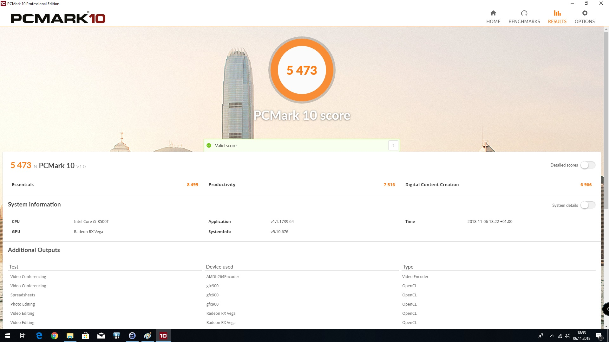

PCMark 10 到底值不值得掏钱？三个版本一笔账算清楚
Basic 免费够不够用、Advanced 解锁了什么、Professional 为什么卖那么贵——从个人玩家到企业采购，按使用强度分三档算时间账，帮你三秒对号入座。
它到底值不值得掏钱？
这是我在 Steam 商店里盯着 PCMark 10 那个"免费"标签和 Advanced 版的价格犹豫了三次才从官方下载点下载的。作为一个升级硬件前必跑一次跑分的人，我需要的不是"能跑"，而是"跑得准"——可这个"准"字值多少钱，得拆开算。
先把 PCMark 10 的产品线摆出来。它是 UL Benchmarks 做的（就是以前的 Futuremark，3DMark 同一家），专为 Windows 10/11 设计，测的是整机综合办公性能，不是显卡极限也不是 CPU 单核。三个版本从免费到商业授权，功能差得挺有层次，不是简单的"免费阉割，付费全开"。
定价拆解：免费版给了什么，付费版多了什么
PCMark 10 有三个版本，渠道和许可条款都不一样，先理清楚——完整的版本对比在PCMark官网上也能查到：
Basic Edition（免费，Steam 上直接"开始游戏"就能下） 能跑主基准测试，也就是 PCMark 10 benchmark 这一套——Essentials、Productivity、Digital Content Creation 三组 Workload 全跑，出一个总分加三层子分。基础功能够用，但有几个明显的限制：不能选跑哪一组、不能自定义测试时长、没有 Express 和 Extended 这两套精简/扩展基准、结果对比只能看本机历史。对于第一次用的人来说，免费版已经能让你感受完整体验，20 到 30 分钟跑完就能拿到分数。
Advanced Edition（付费，Steam 分发，个人非商业许可） 在 Basic 基础上解锁了 Express 基准（约 8 分钟就能出结果，适合快速筛查）、Extended 基准（加了 Gaming 和 Battery Life 两个测试组）、自定义运行（选特定 Workload 跑）、3dmark.com 结果对比（自动拉同硬件用户的分数分布，看你是中位数还是 outliers）。Steam 上的定价不算离谱，但 Advanced 版的许可明确写了非商业——公司采购部门拿 Steam 版跑招标会有法律风险。
Professional Edition（UL 官网直接卖，商业授权） 在 Advanced 之上再加 Battery Life Profile（五场景电池画像，不是单一续航数字）、命令行自动化工具（PCMark10Cmd.exe，可以脚本化批量跑）、Battery Life Calibration Tools（屏幕亮度校准、电源计划导入）、企业技术支持。专业版是按许可证卖的，不是订阅，一次买断永久用，但价格对个人用户来说基本可以忽略——它是给企业 IT 部门和硬件厂商准备的。
算账：三档使用强度各有答案
把三个版本的功能边界列清楚之后，关键问题就变成了：你属于哪一类用户？ 不同的使用强度，付费的性价比天差地别。
轻度用户：电脑买回家，跑一次分数就存档
如果你买新电脑或者升级硬件后，只打算跑一次 PCMark 10 看看分数落在哪个区间，然后就再也不碰它了——免费版完全够用。主基准的总分已经能告诉你这台机器的综合办公性能在什么水平，轻薄本大概 5000 到 8000，游戏本和创作本在 8000 到 12000，台式机能过万。跑完存个档，以后卖机器或者对比新机掏出来就行，不需要 Advanced 的那些花活。
轻度用户唯一可能想升级的场景：你想知道自己的分数在同硬件里处于什么位置。Advanced 版的 Compare 按钮能自动拉 3dmark.com 数据库里同 CPU + GPU 用户的分数分布，如果你的分数比中位数低 10% 以上，通常意味着驱动或者系统配置有问题。但这个功能的使用频率很低——一年能跑两三次了不起了，为此掏钱的话单位时间成本偏高。
主力用户：每季度跑一次，用来调优和对比
如果你是那种升级驱动前跑一次、清灰换硅脂后跑一次、Windows 大版本更新后再跑一次的人——Advanced 版的价值开始显现。Express 基准 8 分钟就能出结果，适合快速验证系统有没有被搞坏；Extended 基准加的 Gaming 组能让你知道核显和独显切换是不是正常，Battery Life 组能看笔记本续航有没有明显退化。
主力用户最常用的功能其实是 3dmark.com 的结果对比。举个例子，我之前给一台 R7 6800H + RTX 3060 的笔记本换了硅脂，换之前总分 9200，换之后 9500，但我不确定这 3% 是硅脂的功劳还是那天室温更低。Advanced 版的 Compare 功能一拉，同硬件用户的中位数是 9350，我的分数从低于中位数爬到中位数以上——这个判断价值比那点钱管用多了。
算账的话，Advanced 版按个人非商业许可来算，平摊到每次使用的成本其实很低。如果你一年跑 10 次，每次的成本就是一顿午饭钱，换来的是"我这个升级到底有没有用"的确定性，比凭感觉靠谱得多。
重度用户：评测人、企业采购、硬件厂商
如果你是科技媒体评测人，每测一台笔记本都要放 PCMark 10 分数对比图表；或者你是企业 IT 采购，招标时需要建立性能基线；再或者你是硬件厂商，新品发布会要用分数做横向对比——Professional Edition 没得选，而且 Advanced 版的 Steam 许可明确禁止商业使用，用了就是侵权。
专业版的 Battery Life Profile 是最独特的功能，具体的五场景测试流程和校准细节，PCMark文档里写得很细。传统电池测试给一个"续航 10 小时"，但 10 小时是视频播放场景还是游戏场景？差异巨大。Battery Life Profile 用 Modern Office、Applications、Video、Gaming、Idle 五个场景各跑一遍，生成一份完整的续航画像——一台号称续航 10 小时的笔记本，游戏场景可能只有 1.5 小时，待机可能超过 20 小时，这个信息对采购决策来说比单一数字有用十倍。
命令行自动化也是重度用户的刚需。企业采购部门要批量跑几十台机器，手动点 Run 不现实，PCMark10Cmd.exe 可以脚本化调度，跑完自动导出 XML 结果，直接进数据库。
替代方案：不付这笔钱有什么别的路
说实话，PCMark 10 不是唯一的选择，免费工具里也有能干活的。
如果你只测 CPU 单核多核极限，Cinebench R23 和 Geekbench 6 都是免费的，而且跨平台。如果你只测存储，CrystalDiskMark 免费开源，顺序读写和随机 4K 比 PCMark 的存储 Workload 精细得多。如果你只测显卡游戏性能，3DMark 的 Basic 版也能跑几个测试项，而且和 PCMark 同一家公司。
但 PCMark 10 的核心价值是整机综合——CPU、内存、存储、GPU 在真实应用场景下同时工作的表现，这个是单项基准替代不了的。比如一台笔记本 PCMark 总分 8500，Cinebench 分数却比另一台 9000 分的机器还高，这说明它的单核很强但整机协调有瓶颈（可能是内存带宽不够，也可能是存储拖后腿）。单项基准测不出这个。
另一条路是降低使用频率。如果你一年只跑一两次，免费版够用了。真需要 Advanced 的功能时，借朋友的号跑一次也行（Steam 有家庭共享）。

结论：三秒对号入座
最后给一个直接的决策框架，不用再纠结：
- 闭眼付：科技媒体评测人、企业 IT 采购、硬件厂商——Professional Edition 是工作工具，没得选。个人玩家如果每年跑 10 次以上、每次需要精准对比硬件升级效果，Advanced Edition 也值得。
- 再等等：升级硬件前只打算跑一两次验证效果的人，先用免费版。等你发现 Compare 功能真的帮你排查出了驱动问题，再升级也不迟——Steam 随时能买。
- 永远不用付：你只关心游戏帧率（用 3DMark 免费版）、只关心 CPU 极限（用 Cinebench）、只关心存储速度（用 CrystalDiskMark）——这些免费工具在各自领域比 PCMark 10 更精准。PCMark 10 的整机综合定位对你来说反而是多余的。
我自己的选择是先从免费版开始，跑了三次之后发现 3dmark.com 的结果对比确实帮我定位了一次内存双通道没开的问题，后来趁 Steam 打折入了 Advanced。这个定价策略挺鸡贼的——免费版让你尝到甜头但卡在"差一点就能更准"的地方，Advanced 刚好补足那个缺口，Professional 再把商业场景的需求单独切出去。分层清晰，谁该掏钱谁不该，一目了然。
这套资料我在三个仓库都留了备份，方便不同网络环境下查阅——GitHub 主仓库、Gitee 国内镜像、GitCode 备用副本，内容同步更新，有补充或者勘误也能在任一仓库提 issue。